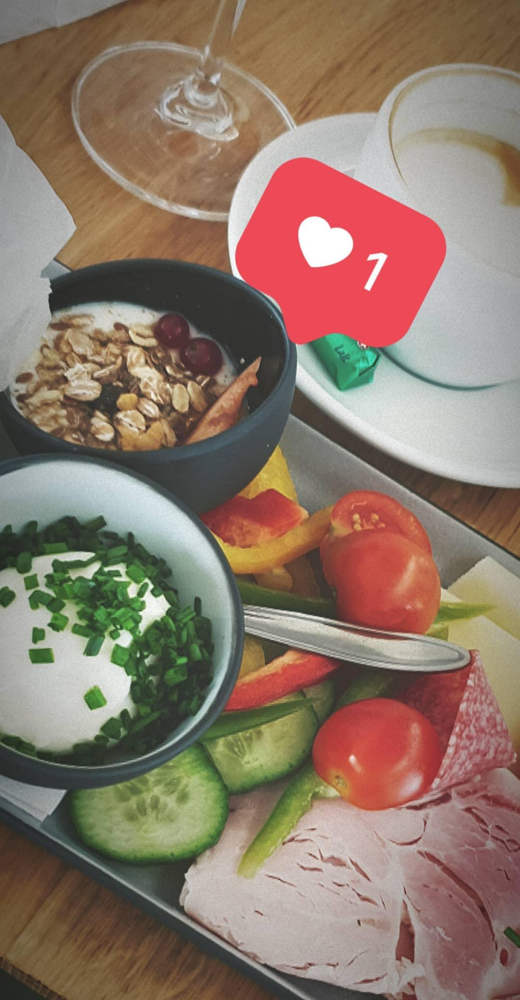
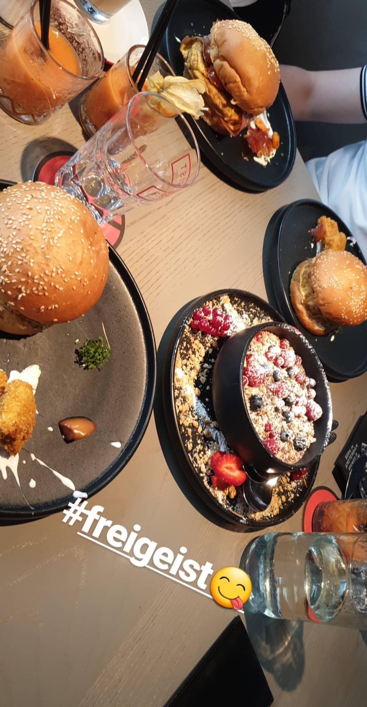
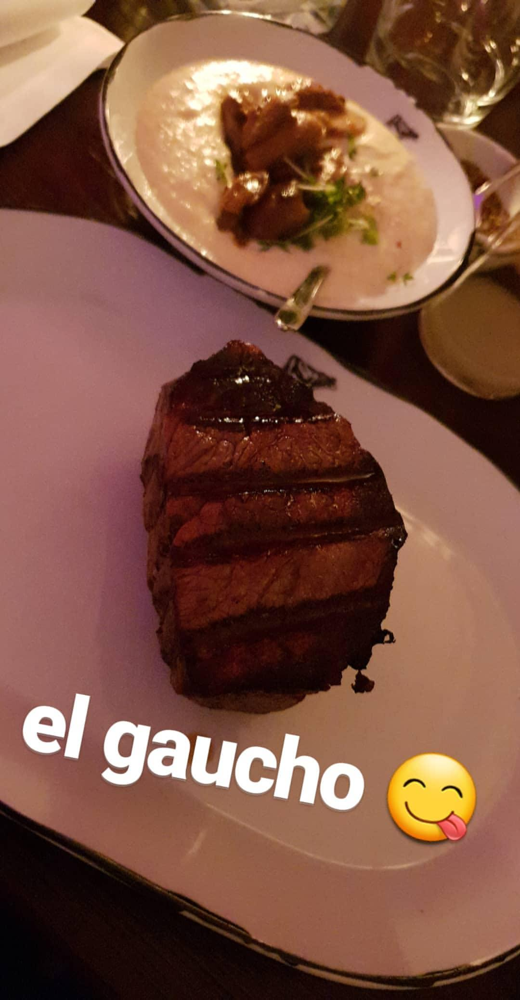

I like to eat kulinarsich and would like to try new discoveries or try different creations. One of my favorite restaurants is Streets. The restaurant is more than just a place to eat: dishes of famous chefs and well-known food from around the world are presented. The guests experience a culinary journey around the world.



EL GAUCHO is my favorite steak house in Graz.